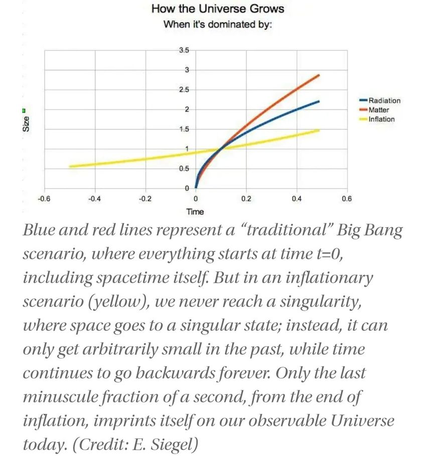

Mobile uploads
It's looking like the universe never actually "began."
There wasn't a singular point right before the Big Bang. Scientists are now thinking the universe has been inflating possibly for eternity.
The numbers don't work out if there was a "Zero" second of when the universe began.